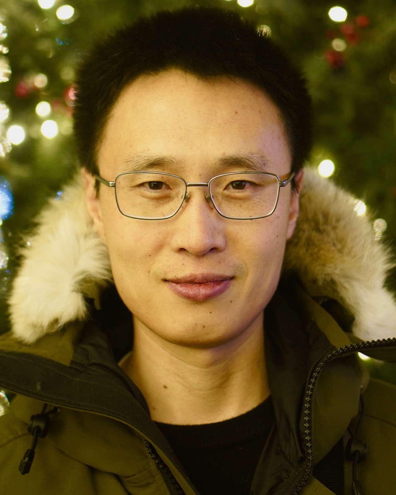
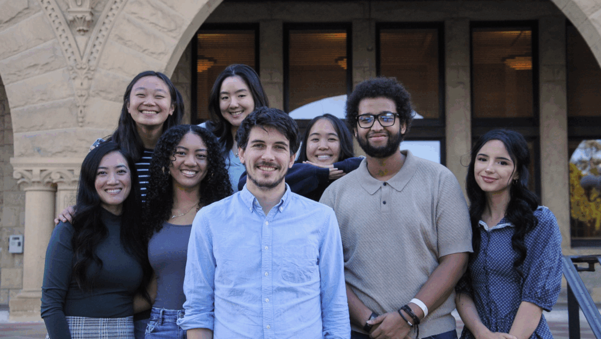
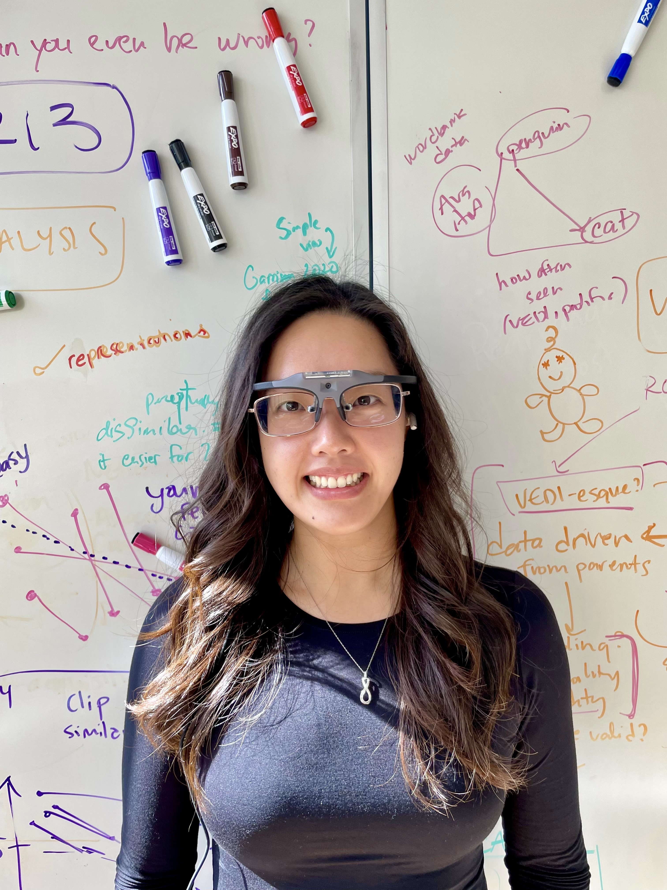
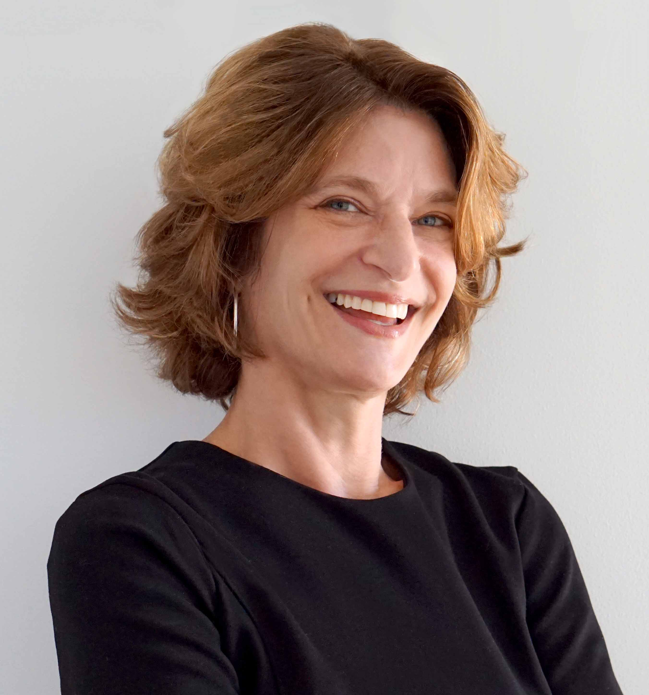
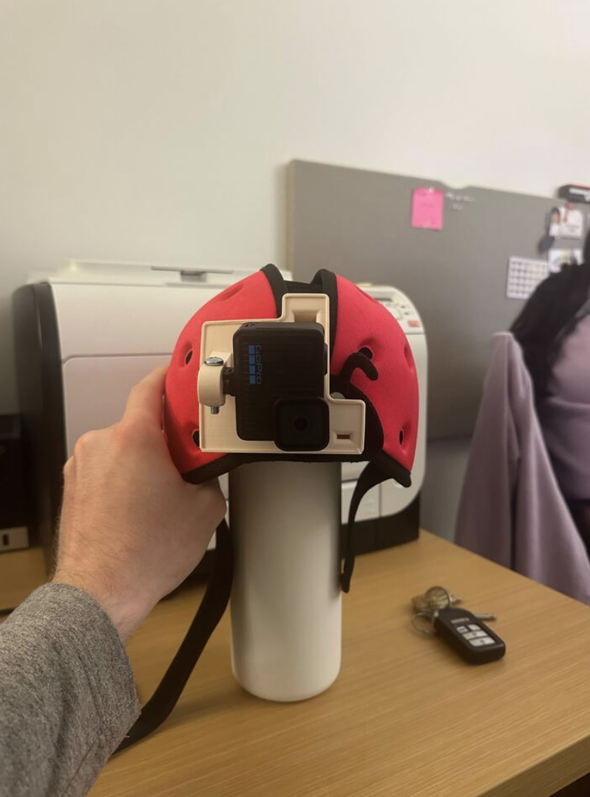
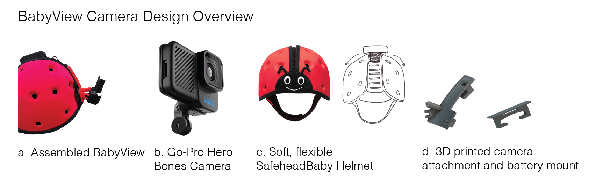
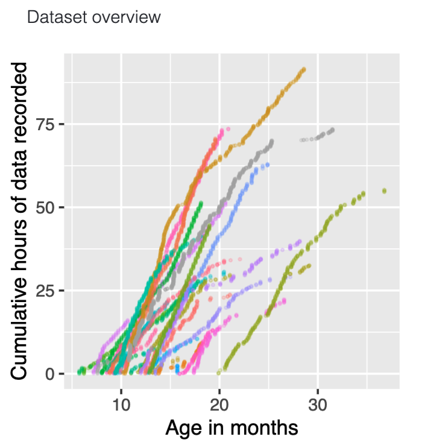
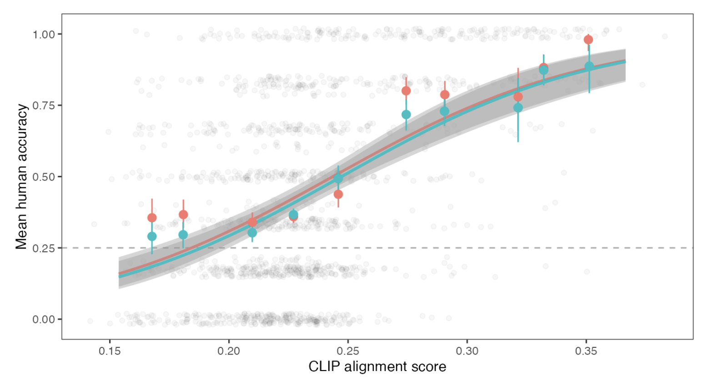
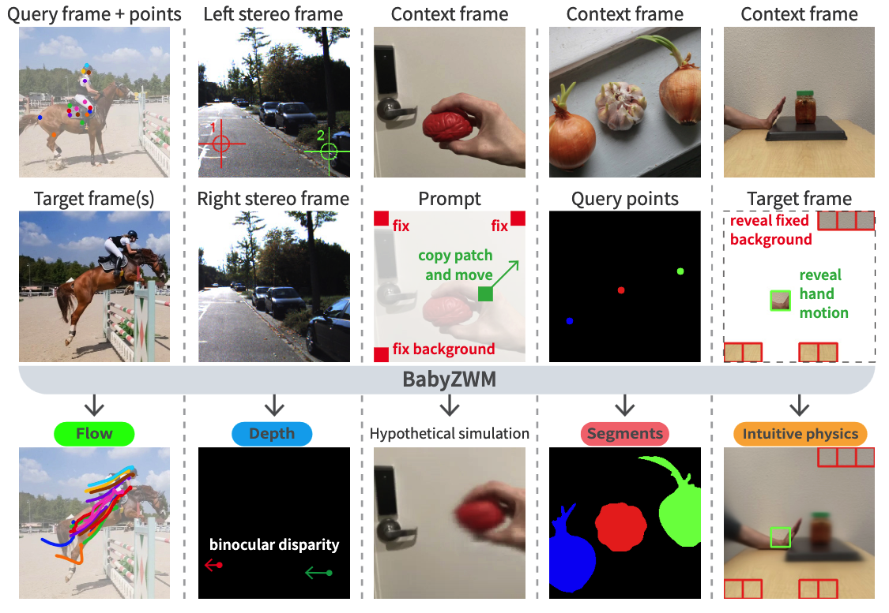

About
A central goal of cognitive computational neuroscience is to understand how structured neural and behavioral representations emerge from everyday, real-world experience. Yet most current models are trained and evaluated on curated datasets — collections of images, videos, and text disconnected from the temporal and embodied nature of how we actually experience the world.
Models trained on curated datasets achieve striking accuracy in predicting neural and behavioral responses to other curated datasets, but they often fail when asked to learn from, or generalize to, more naturalistic data. This satellite event highlights new methods for characterizing the learning environment available to young children, and new modeling approaches that can learn from these messy yet structured data.
We propose that moving beyond curated datasets is essential to improve our understanding of human learning.
What to expect
Short research talks
A series of brief talks from researchers spanning developmental science, cognitive neuroscience, and machine learning. Talks introduce work using infant egocentric video to characterize the input available during early learning, and computational approaches for training models on such data.
Moderated panel
A moderated discussion focused on open questions: What makes naturalistic data fundamentally different from curated datasets? How do we collect rigorous and ethical egocentric data from a child's perspective? What challenges arise when training models on developmental data?
Learning goals
- Understand the limitations of curated datasets for modeling human learning.
- Gain familiarity with emerging naturalistic datasets and modeling approaches.
- Identify opportunities for cross-disciplinary collaboration on developmental data.
Speakers
Researchers working at the intersection of developmental science and machine learning.
Daniel L.K. Yamins
Professor, Computer Science & Psychology
Stanford University
Bria Long
Assistant Professor, Psychology
UC San Diego

BGBoqing Gong
Assistant Professor & Research Scientist
Boston University / Google
Catherine Tamis-LeMonda
Professor, Applied Psychology
New York University
Organizers
Drawn from four institutions, spanning computer science, developmental science, psychology, and cognitive neuroscience.
Clíona O'Doherty
Postdoctoral Researcher · Moderator
Stanford University

CECameron T. Ellis
Assistant Professor, Psychology
Stanford University
Michael C. Frank
Professor, Psychology
Stanford University

JYJane Yang
PhD Student, Psychology
UC San Diego

KAKaren Adolph
Professor, Psychology & Neural Science
New York University
Schedule
A 90-minute session: short research talks followed by a moderated panel. Final start time TBD — see the CCN 2026 program.
-
0:00 – 0:05
Welcome & framing
-
0:05 – 0:20
Learning visual representations from developmental video
-
0:20 – 0:35
What infants see: the BabyView dataset and what it tells us about early input
-
0:35 – 0:50
Training models on naturalistic, embodied video
-
0:50 – 1:05
Everyday experience as a window into early learning
-
1:05 – 1:25
Panel discussion & Q&A
-
1:25 – 1:30
Closing & next steps
Talk titles are tentative and may be updated closer to the event.
The BabyView Project
Much of the developmental data motivating this event comes from The BabyView Project — the largest open egocentric video dataset of children's everyday experience to date. BabyView uses a head-mounted, high-resolution camera to capture toddlers' first-person view, along with accelerometer and gyroscope data, in homes and preschools.
The dataset has been used to train self-supervised vision and language models and to evaluate their transfer to out-of-distribution tasks, including object recognition, depth estimation, image segmentation, and syntactic structure learning.
The data
A glimpse of what the dataset looks like: a head-mounted, high-resolution camera and the egocentric video it produces — adult faces, objects in hand, environments traversed. All images from the BabyView project.


The infant view


What we're learning from it



Attending
The event is open to all CCN 2026 attendees. We expect 50–80 participants and will keep the session accessible to a broad audience — talks emphasize conceptual insights and intuitive explanations, with familiarity with technical details helpful but not required.
The event is particularly relevant for researchers in machine learning, cognitive science, and neuroscience curious about how developmental perspectives can inform computational models. We strongly encourage questions from trainees and non-experts throughout the session.
When: Sunday, August 2, 2026 (the day before CCN 2026 begins)
Where: New York University, New York City
To attend the event:
Organizer note: replace href="#" on the two register links (hero CTA + this callout) with the Google Form URL once it's live.